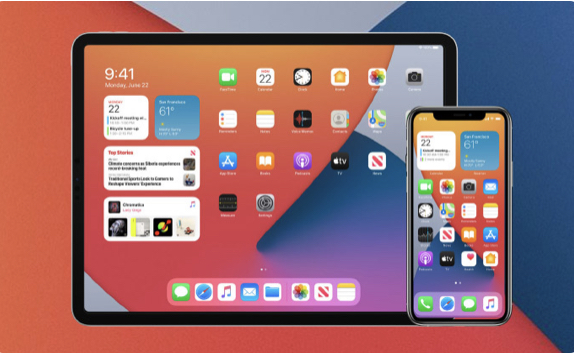
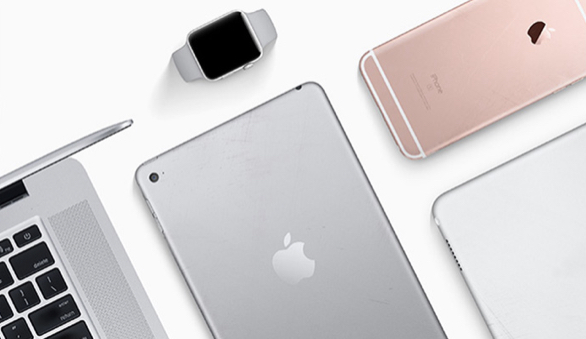
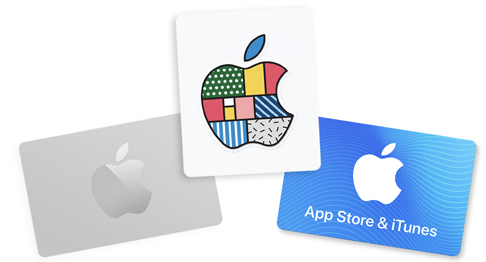

Welcome to Apple Support
- iPhone
- Mac
- iPad
- Watch
- Music
- TV
forgot Apple ID or Password
Apple Repair
Billing and Subscriptions

Update to iOS 14
Add widgets to your Home Screen, automatically organize your apps, and have even more fun with Messages.
Get iOS 14

Trade in with Apple
Turn an eligible device into credit towards a new one, or recycle it for free. Apple Trade In is good for you and the planet.
Learn more
Tell us how we can help
Answer a few questions and we'll help you find a solution.
Get Support
Service and support from Apple experts
AppleCare products provide additional hardware service options and expert technical support from Aplle.
Learn about AppleCare plans
Beware of counterfeit parts
Some counterfeit and third party power adapters and batteries may not be designed properly and could result in safety issues. To ensure you receive a genuine Apple battery during a battery replacement, we recommend visiting an Apple Store or Apple Authorized Service Provider. If you need a replacement adapter to charge your Apple device, we recommend getting an Apple power adapter.
Also non-genuine replacement displays may have compromised visual quality and may fail to work correctly. Apple-certified screen repairs are performed by trusted experts who use genuine Apple parts.

Be aware of gift card scams
Learn more
Apple Service Programs
iPad Air (3rd generation) Service Program for Blank Screen Issue
Smart Battery Case Replacement Program for iPhone XS, iPhone XS Max, and iPhone XR
iPhone 6s and iPhone 6s Plus Service Program for No Power Issues
15-inch MacBook Pro Battery Recall Program
Apple Three-Prong AC Wall Plug Adapter Recall Program
See all programs